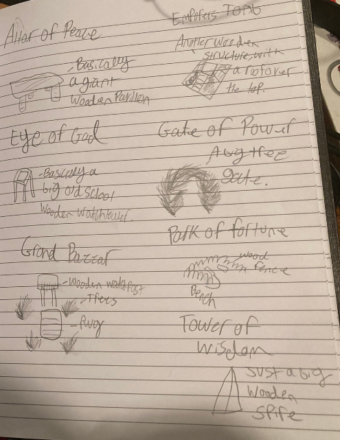
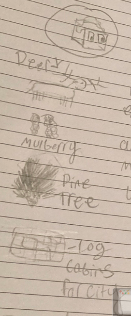

Lumber-in
Author: Woof777#7359
The Lumber-in are a forest dwelling tribe, who becomes masters of their environment. Cutting down wood for everyone’s daily lives. Until, eventually supply ran out, and the have appeared unto the square, for more materials.
Lumber-in start the game with the forestry tech.
Spawn rates
Decreased water and crops, greatly decreased forests. Increased fish, greatly increased mountains.
Visual design
Terrain
Animal: Deer
Mulberry: Fruit
Forest: Pine tree
Field: Dark green, similar to Quetzali
Monuments
Altar of Peace: A giant wooden pavillion
Emporers Tomb: A wooden structure with a roof
Eye of God: A very big old-school watch tower
Gate of Power: A big tree gate
Grand Bazaar: A rug surrounded by trees, and a wooden watchpost
Park of Fortune: Benches surrounded by a wooden fence
Tower of Wisdom: A big wooden spire
Other
Cities: Log cabins
Tribe colour: Dark brown, similar to Yaddak
City name syllables
Be, Ot, Ta, Twa, To, Ro, N, Ed, No
Images

